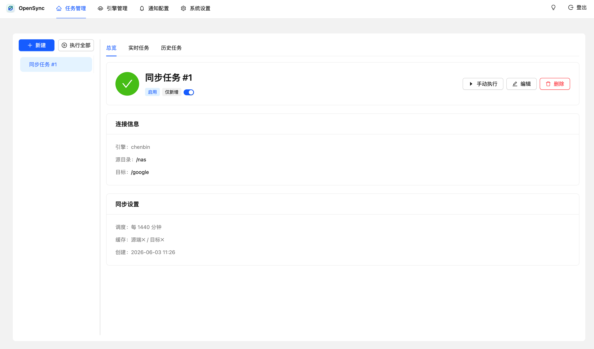
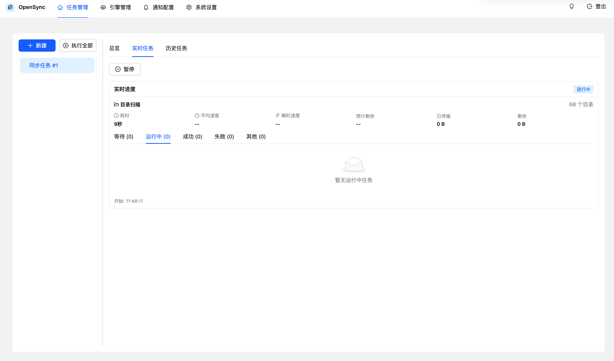
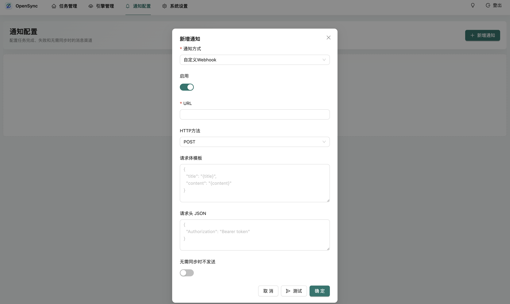

为家庭与小团队的真实目录工作流设计
照片库、影音库、下载目录、文档目录往往分散在本机、网盘、对象存储和 WebDAV。OpenSync 让这些路径以任务形式沉淀下来，减少手动搬运和重复检查。
如果你在飞牛 NAS 上想找一个类似群晖 Cloud Sync 的同步工具，OpenSync 把 AList / OpenList 已接入的各种存储变成可调度、可观察、可重试的同步任务。
照片库、影音库、下载目录、文档目录往往分散在本机、网盘、对象存储和 WebDAV。OpenSync 让这些路径以任务形式沉淀下来，减少手动搬运和重复检查。
支持单个或多个源目录同步到单个或多个目标目录，适合备份、镜像同步和归档迁移。
支持手动执行、按分钟间隔执行、Cron 定时执行和一键执行全部启用任务。
支持 Gitignore 风格排除规则，也能按最小和最大文件大小过滤不需要同步的内容。
展示扫描进度、传输速度、剩余时间，以及已完成、失败、等待和运行中明细。
内置 Server 酱、钉钉、企业微信、飞书 / Lark，并支持任意 GET / POST / PUT Webhook。
首次启动引导创建管理员账号，并提供 24 位恢复密钥用于 Web 端重置密码。
OpenSync 不只是复制文件，它把路径、规则、调度、进度、失败项和通知都收束在同一个管理界面里。
添加多个引擎，保存前验证连接，令牌不会在列表中展示。
选择仅新增、全同步或移动模式，配置排除规则、大小过滤、并发和计划执行。
实时查看任务明细，失败后可继续执行、重新执行或只重试失败项。
任务总览、实时进度、通知配置，一目了然。



默认数据保存在当前目录的 data/ 文件夹。升级、迁移和排查问题前，请先备份这个目录。
mkdir -p opensync
cd opensync
curl -O https://raw.githubusercontent.com/chenbin3625/OpenSync/main/docker-compose.yml
docker compose up -dservices:
opensync:
image: chenbin3625/opensync:latest
container_name: opensync
restart: unless-stopped
ports:
- "8023:8023"
volumes:
- ./data:/app/data
environment:
OPENSYNC_PORT: 8023
GIN_MODE: releasehttp://你的设备IP:8023/Docker 镜像适合常驻服务，GitHub Release 二进制适合不方便使用容器的环境。二进制文件已内嵌前端静态资源。
推荐使用 chenbin3625/opensync:latest，也可以固定到版本标签。
覆盖常见 x86_64、ARM64 和 ARMv7 架构的飞牛系统、NAS 和服务器设备。
Release 上传 Linux、macOS、Windows 的 amd64 与 arm64 产物，并提供 linux-armv7。
获取源码、下载发布包、阅读文档或提交问题反馈。
源码地址：github.com/chenbin3625/OpenSync。页面中的快速开始命令也直接引用该仓库的 docker-compose.yml。